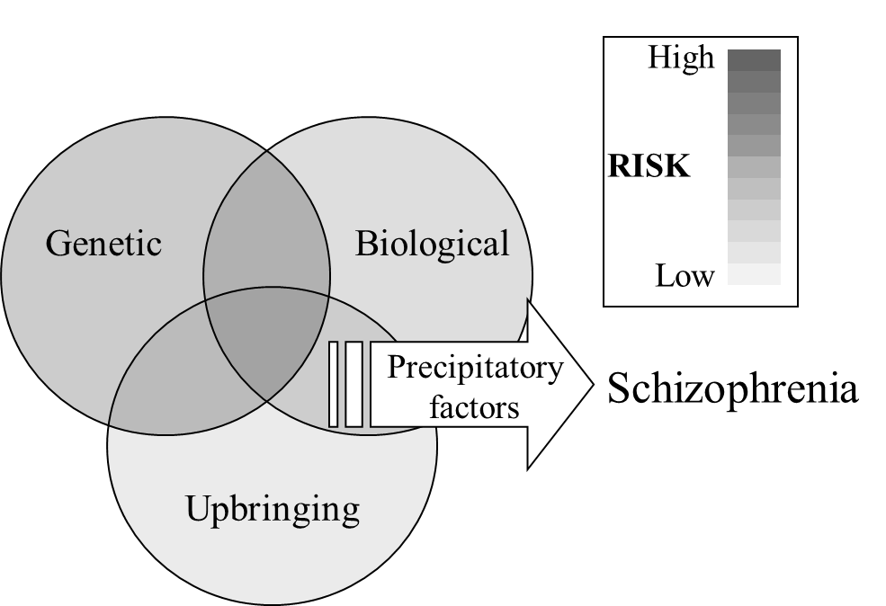
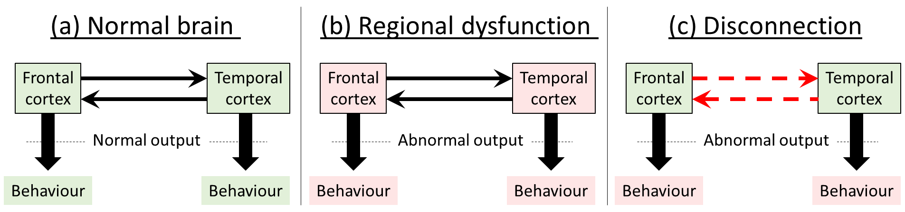

Schizophrenia
Learning Objectives
- Know the main symptom clusters associated with schizophrenia, and be aware of the diagnostic criteria used
- Know the fundamentals of the three main biochemical theories of schizophrenia (dopamine, glutamate, serotonin)
- Appreciate how an understanding of the mechanism of action of drugs affecting behaviour, and those used in treatment of schizophrenia help us understand the biochemical changes occurring in the disease
- Be aware of the main classes of drugs used to treat schizophrenia, and their advantages and limitations.
Overview of schizophrenia
Schizophrenia is a severe and persistent mental disorder which causes profound changes in social, emotional and cognitive processes, with a major impact on daily lives. It has a prevalence of 0.3 to 0.7% worldwide, and is characterised by disturbances in thought processes, perception, behaviour and cognition. These symptoms normally emerge in late adolescence and early adulthood (17 to 30 years), with males generally showing earlier onset than females.
Although the term schizophrenia was only coined in the nineteenth century, there are descriptions of symptoms resembling schizophrenia from as early as ancient Egypt, Greece and China, and examination of the manifestations of people who were termed “possessed” or “mad” suggest that they probably suffered from schizophrenia. In the Middle Ages, mental illnesses were separated into four main categories: idiocy, dementia, melancholia and mania. At the time, mania was a general term describing a condition of insanity where the individual exhibited hallucinations, delusions and severe behavioural disturbances, rather than the more specific diagnostic term used today (see Affective Disorders).
The German psychiatrist Emil Kraepelin (1856 – 1926) found these categories unhelpful in understanding the presentation, progression and outcome of mental diseases. In the 1890s, he put forward the idea of grouping together symptoms associated with similar outcomes, which he believed provided different manifestations of a single progressive disease, which he called dementia praecox, or early dementia, characterised by dementia paranoides, hebephrenia and catatonia. However, at the time, Kraepelin’s views were not widely accepted, and indeed were ridiculed by many clinical professionals.
The widespread adoption of these ideas across the psychiatric community can be put down to the work of the Swiss psychiatrist Eugen Bleuler (1857 – 1939), published in 1911. He developed Kraepelin’s diagnostic ideas, but he conceptualised the condition as a more psychological disorder, rather than the neuropathological disorder conceived by Kraepelin. He regarded hallucinations and delusions, the key features described by Kraepelin, as accessory symptoms, suggesting that the core (cardinal) symptoms related more to anhedonia and social withdrawal aspects of the condition (negative symptoms: see below), which were present in all cases. He also coined the term schizophrenia, as he believed the term dementia praecox was misleading. The name refers to a splitting of the mind, derived from the Ancient Greek, schizo – split and phren – the mind. This refers to dissociated thinking and an inability to distinguish externally generated stimuli from internally generated thoughts: notably, he was not referring to dual personality, which is a completely different psychological phenomenon.
In the 1950s, another German psychiatrist, Kurt Schneider (1887 to 1967) asserted that hallucinations, thought disturbances and delusions (positive symptoms), which he termed ‘first rank’ symptoms, were the most relevant. The diagnostic principles laid down by Kraepelin, Bleuler and Schnieder form the basis of the systems of diagnosis used today, the Diagnostic and Statistical Manual of Mental Disorders (DSM: American Psychiatric Association) and the International Classification of Diseases (ICD: World Health Organisation).
Aetiology of schizophrenia
It is now clear that no one cause underlies schizophrenia, but that it is determined by the interaction between genetic, biological and social factors.
Genetic factors
Studies from the early twentieth century showed that relatives of people with schizophrenia were more likely to develop schizophrenia than the population as a whole, suggesting some familial, genetic influence. More recently studies on fraternal (dizygotic) and identical (monozygotic) twins showed a substantially higher incidence of schizophrenia in twins whose co-twin suffered schizophrenia.
Twin studies
Concordance (percentage) in schizophrenia compares the incidence rate between two individuals. In dizygotic twins concordance is 15 to 25% – that is, if one twin has schizophrenia, there is a 15 to 25% chance that the other twin will also have it. In monozygotic twins, the concordance rate is 40 to 65%.
This compares to a concordance rate in the population as a whole of approximately 0.3 to 0.7%, indicating a clear hereditable, genetic component to vulnerability. However, given that dizygotic twins share 50% of their genes and monozygotic twins share 100%, the concordance rates are considerably lower that would be expected if schizophrenia were entirely genetically determined (50% and 100% respectively). Adoption studies showed that the concordance rates in twins raised separately were similar to this, even when they were unaware that they were twins. Moreover, twins of healthy biological parents who were adopted by foster parents, of which one of the latter went on to develop schizophrenia, did not have a higher risk of themselves developing schizophrenia. Therefore, it is not social factors of upbringing that are influencing the concordance rates in twins, but rather the genetic influence.
Importantly, these data do not suggest that being a twin is a risk factor for developing schizophrenia: the concordance rate amongst twins is the same as in the population as a whole. Rather, the data show that if one twin has schizophrenia, the other twin has a higher than normal probability of also having it.
It is thought that genetic factors contribute approximately 50% of the vulnerability for schizophrenia, and molecular genetic approaches over the last three decades aimed to identify specific genes or groups of genes involved in this susceptibility. A number of candidate genes have been identified, although their precise involvement in the development of schizophrenia is still uncertain. However, it is unlikely that any one single gene is responsible for the vulnerability, but rather a combination of genes across the genome. This may account, to some extent, for the variation on presentation of the disease across different sufferers, if the combination of ‘vulnerability’ genes is different in different individuals.
Biological factors
A number of biological risk factors have been suggested, including pregnancy and birth complications, maternal infection during pregnancy, and possibly infections and/or exposure to toxins during development. However, there is still considerable uncertainly as to the relative contribution of any of these, or how exactly they influence the progression of the disease.
Looking first at pregnancy complications, there is evidence that maternal infection, particularly during the second trimester of pregnancy, is correlated with a raised chance of developing schizophrenia. Children born in the spring (March and April in the northern hemisphere and September and October in the southern hemisphere), where the second trimester coincides with the winter months during which viral infections are at their peak, have a higher incidence than children born outside these months. In addition, there is a high incidence of the disease in children born shortly after major influenza epidemics: it remains to be seen what impact the COVID-19 pandemic will have on the incidence of schizophrenia in the future. This effect may be mediated by pro-inflammatory cytokines, which have been shown to alter foetal neurodevelopment, particularly during the period of high proliferation and specialisation in the second trimester. Similarly, food shortage or malnutrition, particularly in early pregnancy, and maternal vitamin D deficiency during pregnancy are reported to increase the risk.
Birth trauma has also been identified as a risk factor. Premature labour and low birthweight are both associated with an increased risk, although both these may be a result of pregnancy complications rather than birth complications per se. However, asphyxiation during birth has also been identified as a risk factor, and there is a high incidence in babies born with forceps delivery: this could be due to the trauma of the use of forceps, or it could be the outcome of the delivery complication which necessitated the use of forceps.
Social factors
There has been considerable focus on whether childhood trauma, such as dysfunction of the family unit, neglect or sexual, physical or emotional abuse increases the probability of developing schizophrenia in the future. While such trauma undoubtedly increases the severity of a schizophrenic episode and the distress caused in individuals, and predicts a worse long term outcome, it is debatable whether there is a causal connection between childhood trauma and schizophrenia.
The urban environment has also been suggested as a risk factor: an increased incidence of schizophrenia has been reported in people who grew up in urban surroundings suggesting that social conditions such as social crowding, social adversity, social isolation and poor housing may have an influence on the incidence of the condition. However, urban surroundings are often associated with poverty and poor diet, which may provide a more biological and less social account for the increased incidence. Similarly, people are more likely to have higher exposure to toxins (e.g. lead) in an urban environment than in a more rural environment. So, although social factors cannot be ruled out further studies, particularly using longitudinal designs, are required to identify specific relationships.
Precipitatory factors
People with genetic, biological and social vulnerabilities, even those in the high-risk group, do not necessarily go on to experience a schizophrenic episode. Rather, precipitatory factors are triggers which evoke schizophrenia in people who are at risk (Figure 10). The main trigger that has been identified is stress, often brought about by traumatic life events, such as bereavement, accident, break up of a relationship, unemployment, homelessness or abuse. Importantly these are not sufficient to trigger a schizophrenic episode in themselves, but can trigger them in people who already have a vulnerability. It is possible also that premorbid changes occurring before the first psychotic episode (see below) may alter the individual’s perception of traumatic events or their ability to deal with them, and so pre-diagnosis schizophrenia may exacerbate the impact of life-changing events, rather than the other way around.

Neurodegeneration/neurodevelopment
We have seen that the main vulnerabilities for schizophrenia are laid down very early in development during pregnancy, at birth and during early childhood, yet the outcome – a schizophrenic episode – normally occurs in early adulthood, some 15 to 20 years later. This suggests a neurodevelopmental aetiology, with abnormal development ‘unmasked’ by changes occurring in adulthood. The neurodevelopmental hypothesis is also supported by structural evidence from the brains of people with schizophrenia, where cortical volume is seen to be less than in control participants. Importantly this apparent loss of cortical tissue is not accompanied by significant increases in glial cells (which occurs with neurodegeneration), indicating that the reduction is not due to degeneration, supporting a neurodevelopmental explanation.
Brain development is a rapid and extremely complex process and is susceptible to damage from many sources. The main period of vulnerability starts in the second trimester of pregnancy, when neurogenesis and neuronal migration are at their peak, and continues through later pregnancy, birth and early childhood, when synaptogenesis occurs. Stress during this period, including inflammation, malnutrition or drugs has a major impact of foetal brain development, which can lead to developmental abnormalities, leading to a vulnerability to schizophrenia. However, we do not yet have a good understanding of what these neurodevelopmental changes are, how they are triggered, how genetic, biological and social factors influence them, nor how they progress to leave the individual vulnerable to schizophrenia.
Although the wealth of evidence suggests a neurodevelopmental basis for the brain abnormalities in schizophrenia, there is also some evidence for neurodegeneration. Psychotic episodes appear to increase in severity over time, and the response to antipsychotic medication reduces over time, suggesting a progressive, neurodegeneration mechanism. It has been proposed that having a psychotic episode may be damaging to the brain, accounting for the increased likelihood and severity of subsequent episodes. If this is the case then it emphasises the importance of early intervention to prevent psychotic episodes developing. In this context, it is interesting that recent evidence suggests that both negative and cognitive symptoms may pre-date positive symptoms, and may act as a premorbid marker for people who are at risk. This then opens the possibility for psychological interventions before the onset of a psychotic episode.
The disconnection hypothesis of schizophrenia (Friston & Frith, 1995)
Many studies have shown both structural and functional abnormalities in the brains of schizophrenic patients.
Classical theories of schizophrenia suggest that impaired function is explained by pathological changes in specific localised brain areas, and that the type of dysfunction exhibited (i.e. the symptoms) depends on the particular areas damaged.
The disconnection theory, on the other hand, proposes a dysregulation of connectivity between regions in neural networks. Although areas may appear both structurally and functionally normal, their interactions within the neural networks controlling behaviour are abnormal, through a failure to establish a proper pattern of synaptic connection. This idea is also consistent with the neurogenerative processes occurring during the second trimester, where vulnerability to damage seems to be highest, since this is the main time of neuronal migration, and marks the start of synaptogenesis.
Disconnection, therefore, causes a failure of appropriate functional integration between regions, rather than specific dysfunctions of the regions themselves. Thus the abnormality is expressed as an output from certain regions of the brain which are dependent on activity in other areas, and abnormal responses would only be seen when the specific activity involved interactions with other parts of the brain: so, for example, behaviours controlled in the frontal cortex are modulated by incorrect information coming from the temporal cortex. The important distinction is summed up as the distinction between ‘the pathological interaction of two cortical areas and the otherwise normal interaction of two pathological areas’ (Friston, 1998, p. 116).

Symptoms
The presentation of schizophrenia is very diverse, meaning that two individuals, both with a diagnosis of schizophrenia, may exhibit a very different spectrum of symptoms. Even within an individual, the symptoms may change over time, so that they may present differently from one month to the next.
Symptoms were originally divided into two groups: positive symptoms (type 1), characterised by exacerbation of normal behaviour; and negative symptoms (type 2), characterised by a suppression of normal behaviour. However, more recently it became clear that there is actually a third cluster, cognitive symptoms, characterised by changes in cognitive executive function. Notably, negative and cognitive symptoms likely predate the onset of psychotic (positive) symptoms and are stable across the duration of the illness in most patients: they generally do not respond well to treatment and often persist after recovery from an acute psychotic episode.
Positive symptoms
Positive symptoms are symptoms that manifest as an enhancement or exaggeration of normal behaviour, where a patient loses touch with reality (psychosis). The most common symptoms in this domain are hallucinations, delusions, and abnormal and disorganised thoughts. These are essentially the symptoms referred to by Schneider as ‘first order symptoms’, and are often the first noticeable sign of illness.
Hallucinations (sensing things that are not there) are the most common symptom, and are experienced by around 75% of people living with schizophrenia. They are most commonly experienced in the auditory modality, where people ‘hear voices’, which may be people commenting on what they are doing and/or giving commands. Voices frequently appear angry or insulting and often demanding, although at times they can be neutral. People can also experience hallucinations in visual, somatosensory or olfactory modalities, where they see, feel or smell (respectively) objects or people that are not actually present. Although not necessarily debilitating in terms of everyday life, experiencing hallucinations can be frightening and distressing for the individual.
Delusions are false beliefs that do not go away, even with evidence that they are not true. They are often associated with delusional perceptions (delusions of reference), where a normal perception takes on a specific, erroneous meaning. This may in turn reflect disturbances in salience attribution, that is, assigning inappropriate importance to unimportant stimuli. The most frequent type of delusions are persecutory delusions where the individual believes that people, including close friends or family, are working against them, commonly associated with large organisations such as government, MI5, or CIA. This leads to extreme mistrust of people, often the people who are trying to help them. However, patients also experience grandiose delusions, where they believe they are exceptionally talented or famous; somatic delusions, where they believe they are ill or deformed; and delusions of control, where they believe that their thoughts are being controlled by an outside force (thought insertion, thought removal, thought broadcasting). The specific form of delusion is often influenced by the person’s own lifestyle, life events and social surroundings.
Disorganised thought, or formal thought disorder, is normally manifest as disorganised speech, where discourse is fragmented and lacks logical progression. This often includes non-existent words (neologisms), and disorganised behaviour, where the individual exhibits unusual and unpredictable behaviour and may show inappropriate emotional responses. At its worst, narrative becomes a completely incoherent jumble of words and neologisms, sometimes referred to as ‘word salad’, reflecting severely disorganised thought processes and poverty of thought content.
There is strong evidence that positive symptomatology is related to temporal lobe dysfunction, and with abnormalities in dopamine function in the basal ganglia, particularly in the mesolimbic pathway, perhaps reflecting a dysregulation of glutamate-dopamine actions in the output from temporal cortex. Positive symptoms respond reasonably well to antipsychotic medication, which reduces dopamine function, emphasising the importance of dopamine systems in their generation.
Negative symptoms
Negative symptoms manifest as general social withdrawal, reduced affective responsiveness (emotional blunting), a lack of interest (apathy), desire (avolition) and motivation (abulia) and reduced pleasure (anhedonia). In its extreme this can lead to mutism (not speaking) and catatonia (immobility), often for extended periods of time. Negative symptoms may be present in the premorbid phase, before the first psychotic episode, but may also emerge during or after a psychotic episode. The brain mechanisms underlying negative symptoms are currently not well understood, although frontal cortex abnormalities are implicated, and, as they do not respond well to treatment, they are a particularly debilitating component of the condition.
Cognitive symptoms
Cognitive symptoms encompass a number of difficulties with learning, memory, attention, planning and problem solving. Cognitive impairments occur in the majority of people with schizophrenia, if not all, and can be extremely severe and persistent. Indeed the degree of cognitive impairment contributes substantially to long term debilitation and is good predictor of outcome. Cognitive changes normally occur before the first psychotic episode, and may contribute to the individual’s abnormal perceptions and attribution which subsequently manifests as positive symptoms. As with negative symptoms, cognitive symptoms probably originate from frontal cortex dysfunction, and do not generally respond well to antipsychotic treatment, emphasising a clinical need for better treatment strategies.
Diagnosis of schizophrenia
The diagnosis of schizophrenia primarily uses one of two diagnostic tools:
- Diagnostic and Statistical Manual of the (DSM: American Psychiatric Association)
- International Classification of Diseases (ICD: World Health Organization)
Both have had several iterations.
In the UK, ICD is the most widely used. Early versions of ICD and DSM exhibited a number of important differences in the conceptualisation of schizophrenia and diagnostic criteria, leading to different diagnoses between countries using ICD (e.g. UK) and DSM (e.g. USA). However, the most recent versions of each, ICD-11 (2019) and DSM-5 (2013) have very similar diagnostic criteria, improving consistency and applicability to clinical practice.
Diagnosis of schizophrenia (ICD 11)
At least two of the following symptoms must be present (by the individual’s report or through observation by the clinician or other informants) most of the time for a period of 1 month or more. At least one of the qualifying symptoms should be from item a) through d) below:
a. Persistent delusions (e.g., grandiose, reference, persecutory).
b. Persistent hallucinations (most commonly auditory, but may be any sensory modality).
c. Disorganized thinking (formal thought disorder). When severe, the person’s speech may be so incoherent as to be incomprehensible (‘word salad’).
d. Experiences of influence, passivity or control (i.e., the experience that one’s feelings, impulses, actions or thoughts are not generated by oneself).
e. Negative symptoms (e.g. affective flattening, alogia, avolition, asociality, anhedonia).
f. Grossly disorganized behaviour that impedes goal-directed activity (e.g. bizarre, purposeless or unpredictable behaviour; inappropriate emotional) Psychomotor disturbances such as catatonic restlessness, posturing, negativism, mutism, or stupor.
g. Symptoms are not a manifestation of another medical condition and are not due to effects of a substance or medication on the central nervous system, including withdrawal effects.
Source: World Health Organization (2019). International Statistical Classification of Diseases and Related Health Problems (11th ed.). https://icd.who.int/
Changes in brain structure in schizophrenia
Although many changes in brain structure have been reported in schizophrenia, no one signature abnormality has been identified. The most consistent changes that have been observed is a reduction in overall brain volume, particularly in grey matter, cortical thinning and increased ventricle size. However, these are also seen in normal aging and in other brain diseases, so are not unique to schizophrenia.
In particular, cortical thinning has been seen in the prefrontal cortex, an area important for logical thinking, inference, problem solving and working memory, perhaps explaining the prevalence of disorganised thoughts and disrupted executive function and working memory in people with schizophrenia. This idea is supported by observations from functional imaging studies, showing reduced prefrontal cortex activity when people with schizophrenia perform cognitive tasks.
Medial temporal lobe structures, including entorhinal cortex and hippocampus, are also important in attention and working memory function, and imaging studies have also shown reduced tissue volume in these areas. In addition, both the temporal cortex and prefrontal cortex have substantial connectivity to the basal ganglia, including the nucleus accumbens (ventral striatum), an area critically involved in salience detection and response selection.
Thus, it is feasible that disruption of dopamine transmission in nucleus accumbens, perhaps under abnormal direction from temporal and frontal cortex inputs, may underlie salience attribution deficits (inappropriate attribution of importance to irrelevant stimuli) seen in schizophrenia. Notably, dopamine is a critical neurotransmitter in the nucleus accumbens, which may account for the efficacy of dopamine antagonists in treating these symptoms.
Therefore, although we do not yet know precisely what structural changes there are in the brains of people with schizophrenia, there is substantial evidence from recent imaging studies, which is beginning to give us clues as to how subtle changes in brain connectivity may translate into the sorts of dysfunctions seen in schizophrenia.
Biochemical theories of schizophrenia
There is strong evidence that certain illicit drugs, including cocaine, amphetamine, phencyclidine and LSD, can cause acute and transient changes which resemble aspects of schizophrenia. In addition, these drugs exacerbate symptoms in people with schizophrenia and can trigger a relapse in people recovering from a previous episode. These drug effects give pointers to neurochemical changes which may underlie schizophrenia, and have formed the basis of biochemical theories. Indeed, they have also provided animal models for studying the mechanisms underlying schizophrenia and development of better drugs.
The dopamine theory posits that schizophrenia is caused by an increase in sub-cortical dopamine function, particularly in the mesolimbic dopamine pathway, projecting from the ventral tegmental are in the midbrain to limbic forebrain areas, primarily nucleus accumbens, but also hippocampus and amygdala. The dopamine theory is based on three main observations:
- first, that drugs which increase dopamine function, including amphetamine, cocaine and L-DOPA (used in the treatment of Parkinson’s disease), cause schizophrenia-like symptoms;
- second, that the first generation of drugs used in treating schizophrenia (typical antipsychotics) are dopamine receptor antagonists;
- and third, there is some evidence for perturbation of dopamine signalling in post-mortem schizophrenic brains, although these may derive from the body’s adaptive changes in response to long-term treatment with dopaminergic drugs.
Whilst there is a great deal of evidential support for the dopamine theory, there are fundamental limitations which indicate that, although dopaminergic systems are involved, the dopamine theory cannot provide a complete explanation of schizophrenia.
Looking at this in more detail, dopaminomimetic drugs like amphetamine cause behavioural changes in normal individuals which resemble some aspects of schizophrenia. However, the changes are limited to behaviours resembling positive symptoms only, including hallucinations, delusions and thought disorder, but do not evoke changes resembling negative or cognitive symptoms. Therefore, although increasing dopamine function does evoke behavioural changes resembling schizophrenia, it does not cause the full spectrum of symptomatology, but only those resembling positive symptoms. Similarly, typical antipsychotic drugs which target dopamine receptors alone are moderately effective at treating positive symptoms, but are very poor at treating negative or cognitive symptoms: indeed there is some evidence that these typical antipsychotic drugs may exacerbate negative and cognitive symptoms, possibly through actions in frontal cortex where dopamine signalling has been reported to be reduced in schizophrenia.
Dopamine signalling as the final common pathway
In its original iteration, the dopamine theory of schizophrenia posited a general over-activity of dopamine in schizophrenia. In a later refinement, only subcortical dopamine was thought to be overactive, with a dopamine underactivity in the prefrontal cortex, accounting for the observation that dopamine receptor antagonists (typical antipsychotic medication) exacerbate negative and cognitive symptoms. However, even this conceptualisation has shortcomings, and does not explain how risk factors translate into the symptoms and time course of schizophrenia.
In their reconceptualisation of the dopamine hypothesis, which they name ‘version III: the final common pathway’, Oliver Howes and Shitij Kapur (2009) bring together recent data from genetics, molecular biology and imaging studies to provide a framework to account for these anomalies.
Molecular imaging studies show increases in activity in the dopamine neurones in schizophrenia, implying that the abnormality lies in the input to dopaminergic neurones rather than the output from them. Notably, dysfunction in both frontal and temporal cortex has been shown to increase mesolimbic dopamine release, suggesting that core abnormalities in these areas can modify critical dopamine function.
Thus, abnormal function in multiple inputs leads to dopamine dysregulation as the final common pathway: the different behavioural manifestations seen in schizophrenia may be due to the actual combination of dysfunctional inputs to the dopaminergic system in each individual. Moreover, within this framework, the underlying damage could be in the brain areas sending projections to the dopamine neurones, or in the connections themselves (see Disconnection hypothesis).
Notably, mesolimbic dopamine systems are implicated in salience attribution, therefore dysregulation of activity in this pathway would result in abnormal salience attribution which may underlie positive symptomatology.
Therefore an important goal for future drug development is to target the mechanisms converging on the dopamine systems, which are abnormal in schizophrenia, rather than on dopamine systems themselves, which are the target of current antipsychotics. This in turn relies on a fuller understanding of what systems are involved.
Glutamate is the most prevalent excitatory neurotransmitter in the mammalian brain, which acts at several different receptor types. Non-competitive antagonists at one of these receptor types, the NMDA receptor (e.g. phencyclidine, ketamine and dizocilpine (MK-801)), cause behavioural changes in normal people which resemble schizophrenia. In addition, when given to schizophrenia sufferers, they exacerbate the symptoms, providing evidence that the drug action mimics the disease state. Therefore this implies that a glutamate underactivity, particularly at NMDA receptors may underlie schizophrenia. Importantly, unlike dopaminergic drugs which provoke behaviours resembling positive symptoms only, NMDA-receptor antagonists generate behavioural changes which resemble symptoms in all three domains – positive, negative and cognitive, implying that glutamate dysregulation is the core deficit in schizophrenia, and that dopamine abnormalities are downstream of this core deficit. There is also a body of evidence showing changes glutamate function in brains of people with schizophrenia, including reduced levels of glutamate and increased cortical glutamate binding in post mortem brains, and increased glutamate receptor density in living brains.
Other transmitters which have been implicated in schizophrenia are serotonin and gamma-aminobutyric acid (GABA). Lysergic acid diethylamide (LSD), an agonist at serotonin receptors, is an illicit drug taken recreationally, and causes reality distortions and hallucinations resembling positive symptoms of schizophrenia, implicating serotonin over activity in schizophrenia. This is consistent with the pharmacological action of atypical (second generation) antipsychotic drugs, many of which are 5HT-2 receptor antagonists. However there is little or no evidence for abnormalities in serotonin function in the brains of people with schizophrenia. Cortical GABA signalling has also been shown to be dysfunctional in the brains of people with schizophrenia, but it is not clear how this impacts on cortical function leading to schizophrenia symptoms.
Treatment
Social and clinical outcome
Without pharmacological intervention, around 20% of people with schizophrenia recover well, although it is likely that they never actually show full recovery, hence the term ‘near full recovery’ is often used.
With pharmacological intervention, this figure rises to around 50% showing near full recovery and able to live independently or with family. A further 25% show moderate recovery, but still require substantial support: these generally live in supervised housing, nursing homes or hospitals. The remainder show little or no improvement.
In particular, negative and cognitive symptoms do not respond well to treatment, and often form the most debilitating long-term dysfunctions.
(Data from Torrey, 2001)
Until relatively recently, there were no effective treatments for schizophrenia. In the nineteenth and early twentieth centuries, sufferers were usually installed in asylums, with little or no form of treatment offered, and little or no communication with the outside world. Where treatments were offered, these included shock treatment (insulin shock, pentylenetetrazol [Metrazol] shock, and electroconvulsive shock [ECT]) and even frontal lobotomy (a severing of the neurones connecting the frontal lobes to the remainder of the brain), both of which were severely debilitating, and had limited efficacy in treating the disease. In this situation, patients rarely showed any sort of recovery: indeed their condition often worsened during confinement.
Typical antipsychotic drugs
The drug chlorpromazine is a powerful tranquilliser, used in managing recovery after surgical anaesthetic. People who took it reported a feeling of well-being and calm. On this basis, during the 1950s, it was tried on people with schizophrenia, who often exhibited extreme agitation. It was found to alleviate some of the symptoms of schizophrenia, notably the hallucinations, delusions and disorganised thought – all symptoms within the positive symptom domain – even at a much lower dose than that required for tranquilliser action.
Pharmacologically, chlorpromazine is a dopamine receptor antagonist, with some selectivity for D2-like receptors (D2, D3, D4) compared to D1-like (D1, D5), although at the time nobody knew what the pharmacology of the drug was: indeed it was not for another decade that dopamine was realised to be a neurotransmitter. It was also not effective in all patients, or against all symptoms, and was associated with some debilitating side effects. Nevertheless, at the time (mid 1950s), it formed a major breakthrough as the first pharmacological treatment for schizophrenia.
Following the discovery of the antipsychotic effect of chlorpromazine, many other dopamine D2-like receptor antagonists were tested as potential antipsychotic drugs. This led to the development of a whole class of antipsychotic drugs: the typical or first-generation antipsychotics. Of these, haloperidol is now the typical antipsychotic of choice, although there are several other typical antipsychotic drugs also licenced for use in UK (e.g. flupentixol, pimozide, sulpiride), which became the mainstay of pharmacological treatment for schizophrenia during the 1970s and 1980s. Originally these drugs were called neuroleptics, as they induced neurolepsis (immobility associated with their major tranquilliser action). Now, they are called antipsychotics, reflecting their reduction of psychotic symptoms at doses much lower than those used to induce neurolepsis. Their antipsychotic efficacy is a direct result of their antagonist action at dopamine D2 receptors.
However, treatment with typical antipsychotic drugs has a number of drawbacks. Firstly they are not very effective: around 25% of patients fail to respond to treatment at all, and others (around 25%) show some improvement, but still show substantial symptomatology. In particular, typical antipsychotic drugs show little or no efficacy at treating negative or cognitive symptoms; they are mainly effective only on positive symptoms. Therefore, while treatment may alleviate positive symptoms, sufferers are left with residual and potentially severely debilitating negative and cognitive symptoms.
Another main drawback of typical antipsychotic drugs is that they produce sedative and motor side effects in the majority of patients. The most debilitating of these are the motor side effects, including resting tremor and akathisia (similar to those seen in Parkinson’s disease), and tardive dyskinesia: each occurs in around 25% of people taking typical antipsychotic medication. These are caused by D2 receptor antagonism in the dorsal striatum (caudate nucleus and putamen) resembling the dopamine depletion seen in these areas in Parkinson’s disease. Notably, the parkinsonian side effects recover on withdrawal of the drugs, but tardive dyskinesia does not and motor function will progressively deteriorate irreversibly if the medication is continued. Finally, the antipsychotic effect of these drugs is not immediate, but takes several weeks to establish, creating a substantial delay between initiation of treatment and control of symptoms.
Atypical antipsychotic drugs
In the search for antidepressant drugs similar to the tricyclic antidepressant, imipramine, several drugs were discovered which had antipsychotic properties: one of these was clozapine. In sharp contrast to other antipsychotics used at the time, clozapine had good antipsychotic potency, but with minimal motor side effects and for this reason it was called an atypical antipsychotic (also known as second generation antipsychotic). Subsequently it was found that, as well as positive symptoms, it is at least somewhat effective at treating negative and cognitive symptoms, and it is effective in some people who do not respond to other antipsychotic drugs. Pharmacologically, too, it is rather different from typical antipsychotics, which are D2 receptor antagonists: clozapine has a wide ranging pharmacology with effects at dopamine, serotonin, acetylcholine, noradrenaline and histamine receptors. Clozapine was introduced as an antipsychotic medication in the early 1970s, but was withdrawn a few years later after a Finnish study reported a high incidence of severe, and potentially fatal blood disorders, agranulocytosis and leucopoenia. However, after extensive studies, it was concluded that the occurrence of agranulocytosis (1%) and neutropenia (3%) in patients taking clozapine is relatively low, particularly beyond 18 weeks after the start of treatment, and it was reintroduced into the market in the 1990s, with strict monitoring controls in place. Thus, in the UK, patients need to have blood tests every week for the first 18 weeks of treatment, then fortnightly up to the end of the first year of treatment and every four weeks thereafter. If there is any sign of agranulocytosis or leukopenia, the drug has to be withdrawn permanently. This monitoring adds substantially both to the patient inconvenience and financial cost, and therefore, although clozapine is still the most effective antipsychotic available, it is only used in cases where other medications have not worked.
The discovery of the effectiveness of clozapine initiated a new approach to developing novel antipsychotic drugs. Rather than focussing on D2 receptor antagonists, drugs with much wider pharmacology were tested. Several more atypical antipsychotics derived from this approach, including olanzapine, currently the first line treatment, quetiapine, risperidone and lusaridone. Although they mostly have a range of pharmacological effects, the common action of these drugs and clozapine, is potent antagonist effects at both D2 and 5HT2 receptors: this dual action is believed to underlie the antipsychotic actions.
Although these drugs are not much more effective at treating positive symptoms – even clozapine is only effective in around 85% of patients – they do have some limited efficacy at treating negative and cognitive symptoms, and they cause little or no motor side effects. However, there use is still limited by other side effects, including substantial weight gain and excessive salivation. In addition, their effects can be quite variable, and are normally significantly slower in onset that typical antipsychotics.
Third and fourth generation antipsychotics
Third generation antipsychotics, for example aripiprazole, brexpiprazole and cariprazine, are D2 receptor partial agonists, rather than full antagonists, which means that where endogenous dopamine levels are high, the drugs reduce its effect, but when they are low the drugs enhance its effect. They also have actions on second messenger pathways to modulate the actions on D2 receptors. Therefore they have a dopamine ‘stabilising’ effect. Some of them also have 5HT partial agonist actions. They are generally as effective as other antipsychotics, but with reduced side effects and are better tolerated. However, they are still not very effective at treating negative and cognitive symptoms. Adequate control of negative and cognitive symptoms, which are arguably the most pervasive and disruptive symptoms of schizophrenia is, at present, an unmet clinical need, and several alternative therapeutic approaches are at the experimental stage, either in preclinical testing or in clinical trials, aiming to target actions beyond dopamine and serotonin receptors. Among these are drugs which modulate glutamate function, drugs acting on acetylcholine systems and drugs targeting a group of regulatory compounds called trace amines.
Psychological therapy
There are a number of psychological therapies available for treating schizophrenia, of which the most important are cognitive behavioural therapy (CBT) and family therapy. Although these therapies are not effective in all people or situations, they are showing great promise for future refinement. CBT primarily focusses on helping the individual understand their abnormal perceptions and work to overcome them, while family therapy involves working with the patient and their family to achieve a less stressful and more supportive environment.
Psychological therapy is often not effective during an acute psychotic episode, as presence of psychotic symptomatology make meaningful communication difficult and also make patients suspicious of caregivers. The most success has been achieved with people who have been stabilised pharmacologically first, where psychological therapy has been successful to maintain stability allowing reduction or even cessation of drugs. Interestingly, also, there has been some success in using psychological therapies in individuals who have shown a vulnerability, or have shown evidence of existing negative or cognitive symptoms, but have not yet experienced a full psychotic episode. In this case therapy looks at adverse life events and the individuals reactions to them: this approach has shown some success in preventing the development of a psychotic episode. Given the evidence that psychotic episodes may in themselves cause damage, this is valuable in managing vulnerable patients, and emphasises the importance of being able to identify vulnerable individuals in the premorbid stage.
Current treatments
The current first line treatment is generally an atypical antipsychotic drug, normally olanzapine, alongside individual CBT and family therapy, although acutely symptomatic patients rarely respond well to psychological therapy: patients require stabilisation pharmacologically before psychological therapy becomes effective. If the first drug is not effective at controlling symptoms, or has unacceptable side effects, a second drug would be tried, normally another atypical antipsychotic drug, but for some patients a typical antipsychotic is more appropriate. Clozapine is only considered after two other antipsychotics have been tried, one of which must be an atypical drug.
In the post-acute period, following a schizophrenic episode, both pharmacological and psychological therapies are generally continued in order to prevent relapse, although it is sometimes possible to slowly reduce drugs, with careful monitoring to guard against relapse, particularly with effective psychological therapy. However, in the post-acute phase, many patients choose not to take the drugs, believing that they are cured, or even choosing the risk of relapse rather than the side effects of the drugs. This alone is estimated to account for a relapse rate of around 20% of patients. In some cases, where adherence to oral preparations is unreliable, it is beneficial to give patients slow-release ‘depot’ preparation, known as long acting injectable drugs, or LAIs. Mostly these are typical antipsychotics, haloperidol, flupentixol or fluphenazine, but LAI preparations of atypical antipsychotics, including olanzapine, risperidone and aripiprazole are now available for clinical use.
Key Takeaways
- Schizophrenia occurs in approximately 0.5% of the population, with peak onset in early adulthood. It is characterised by a variety of symptoms, which cluster into three types: positive (psychotic), negative and cognitive. Although positive symptoms are the most noticeable, and indeed it is usually the emergence of positive symptoms that alerts people to the problem, negative and cognitive symptoms may occur before a psychotic episode, and often endure long after recovery from a psychotic episode, causing substantial long-term debilitation. Vulnerability to schizophrenia depends on genetic, biological and social factors, which influence neurodevelopment, although little is known about the precise mechanisms. A psychotic episode is triggered in a vulnerable individual by precipitatory factors, the most prominent of which seems to be stress, particularly from adverse life events.
- Biochemical theories posit critical roles for glutamate and dopamine in the pathology of schizophrenia, although other transmitters, notably serotonin and GABA have also been implicated. It is thought that the primary deficit may lie in abnormal cortical glutamate function, supported by physiological and imaging studies showing decrease cortical volume, and changes in markers of cortical glutamate function in schizophrenic brains. Negative and cognitive symptoms may be a result of abnormalities in frontal and/or temporal cortices, or in the communication between them, while dysregulated glutamate-dopamine signalling, particularly in the basal ganglia, may account for positive symptomatology.
- Current treatments rely heavily on drugs which act as antagonists at dopamine and serotonin receptors, the typical and atypical antipsychotics. They are reasonably effective at treating positive symptoms, perhaps reflecting the critical dopaminergic element in the expression of positive symptoms, but have little or no effect on negative or cognitive symptoms: they are also not effective in around 25% of sufferers, and cause unpleasant and debilitating side effects. Therefore there is a real clinical need for drugs which offer better control of symptoms in all three domains, with fewer side effects.
References and further reading
Bowie, C. R., & Harvey, P. D. (2006). Cognitive deficits and functional outcome in schizophrenia. Neuropsychiatric disease and treatment, 2(4), 531–536. https://doi.org/10.2147/nedt.2006.2.4.531
Chen, Z., Fan, L., Wang, H., Yu, J., Lu, D., Qi, J., … & Wang, S. (2022). Structure-based design of a novel third-generation antipsychotic drug lead with potential antidepressant properties. Nature Neuroscience, 25(1), 39-49. https://doi.org/10.1038/s41593-021-00971-w
Egerton, A., Modinos, G., Ferrera, D., & McGuire, P. (2017). Neuroimaging studies of GABA in schizophrenia: A systematic review with meta-analysis. Translational psychiatry, 7(6), e1147. https://doi.org/10.1038/tp.2017.124
Ellenbroek, B. A. (2012). Psychopharmacological treatment of schizophrenia: What do we have, and what could we get? Neuropharmacology, 62(3), 1371-1380. https://doi.org/10.1016/j.neuropharm.2011.03.013
Friston, K. J. (1998). The disconnection hypothesis. Schizophrenia Research, 30(2), 115-125. https://doi.org/10.1016/S0920-9964(97)00140-0
Friston, K. J., & Frith, C. D. (1995). Schizophrenia: A disconnection syndrome? Clinical Neuroscience, 3(2), 89-97
Henriksen, M. G., Nordgaard, J., & Jansson, L. B. (2017). Genetics of schizophrenia: Overview of methods, findings and limitations. Frontiers in Human Neuroscience, 11, 322. https://doi.org/10.3389%2Ffnhum.2017.00322
Howes, O. D., & Kapur, S. (2009). The dopamine hypothesis of schizophrenia: Version III–the final common pathway. Schizophrenia Bulletin, 35(3), 549-562. https://doi.org/10.1093/schbul/sbp006
Jauhar, S., Johnstone, M., & McKenna, P. J. (2022). Schizophrenia. The Lancet, 399(10323), 473–486. https://doi.org/10.1016/S0140-6736(21)01730-X
McCutcheon, R. A., Abi-Dargham, A., & Howes, O. D. (2019). Schizophrenia, dopamine and the striatum: From biology to symptoms. Trends in Neurosciences, 42(3), 205-220. https://doi.org/10.1016/j.tins.2018.12.004
McKenna, P. J. (2013). Schizophrenia and related syndromes. Routledge.
Morgan, C., & Fisher, H. (2007). Environment and schizophrenia: Environmental factors in schizophrenia: Childhood trauma – a critical review. Schizophrenia bulletin, 33(1), 3–10. https://doi.org/10.1093/schbul/sbl053
Orsolini, L., De Berardis, D., & Volpe, U.(2020) Up-to-date expert opinion on the safety of recently developed antipsychotics, Expert Opinion on Drug Safety, 19(8), 981-998, https://doi.org/10.1080/14740338.2020.1795126
Seeman, P. (2013). Schizophrenia and dopamine receptors. European Neuropsychopharmacology, 23(9), 999-1009. https://doi.org/10.1016/j.euroneuro.2013.06.005
Tandon, R., Nasrallah, H. A., & Keshavan, M. S. (2009). Schizophrenia, “just the facts” 4. Clinical features and conceptualization. Schizophrenia Research, 110(1), 1-23. https://doi.org/10.1016/j.schres.2009.03.005
Torrey, E.F. (2001) Surviving Schizophrenia: A Manual for Families, Consumers, and Providers (4th Edition); HarperCollins.
World Health Organization (2019). International Statistical Classification of Diseases and Related Health Problems (11th ed.). https://icd.who.int/